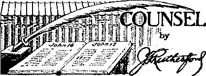
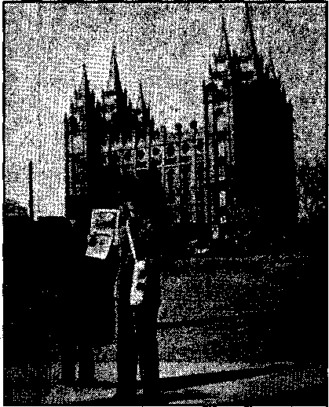
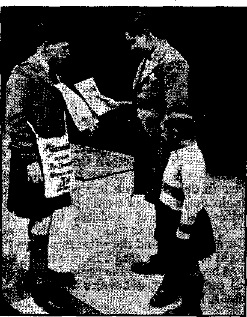
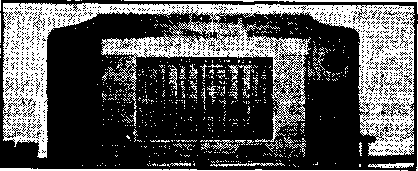

Street
Name
State
City
I am enclosing a 25c contribution for Judge Rutherford’s new book, Children, and his 32-page booklet Comfort All That Mourn. Please use the remittance to publish more of these.


Europe’s Need of The Theocracy
The Beastly Business of Mass Murder 9
Under the Totalitarian Flag
Rome’s Love of Wealth and Power
Counsel by J. F. Rutherford
“The Accuser of Our Brethren Is Cast Down” 19 The New Government
Belated Convention Experiences
British Comment
Published every other Wednesday by WATCHTOWER BIBLE AND TRACT SOCIETY, INC.
117 Adams St., Brooklyn, N. Y„ U, S. A.
Editor Clayton J. Woodworth
Business Manager Nathan H. Knorr
Five Cents a Copy
1 a year in the United States
1.25 to Canada and all other countries
NOTICE TO SUBSCRIBERS
Remittances: For your own safety, remit by postal or express money order. When coin or currency is lost in the ordinary mails, there is no redress. Remittances from countries other than those named below may be made to the Brooklyn office, but only by International postal money order.
Receipt of a new or renewal subscription will be acknowledg'd only when requested. Notice of Expiration is sent with the journal one month before subscription expires. Please renew promptly to avoid loss of copies. Send change of address direct to us rather than to the post office. Your request should reach us at least two weeks before the date of issue with which it is to take effect. Send your old as well as the new address. Copies will not be forwarded by the post office to your new address unless extra postage is provided by you.
Published also in Afrikaans. Bohemian. Danish. Dutch. Finnish. French, German. Greek. Hungarian. Japanese, Norwegian, Polish, Portuguese, Spanish, Swedish, Ukrainian; also special Australian edition in English.
OFFICES FOR OTHER COUNTRIES
England 34 Craven Terrace. London. W. 2
Canada 40 Irwin Avenue, Toronto 5, Ontario
Australia 7 Beresford Road. Strathfield. N S W. South Africa 623 Boston House, Cape Town
Entered as second-class matter at Brooklyn, N. Y., under the Act of March 3, 1879.
Notanda
Jesuit Scheme
for Taking Over the World ♦ Until just recently the Pacelli-Hitler conspiracy for the seizure of Europe was progressing smoothly. Said R.R.R. in the New York Times, issue of May 17,1941: A relatively weak Germany entered the Rhineland and Austria. A stronger Germany took Czechoslovakia and Poland. A powerful Germany took Denmark and Norway. A much greater Germany took Holland, Belgium and France. A great Continental Germany occupied Rumania, Bulgaria and Hungary and ruthlessly destroyed Yugoslavia and Greece. Today the most powerful and most ruthless military State that the world has ever known reaches across the Mediterranean and North Sea, throws its dark shadow across Asia and to the Cape of Good Hope, even across the Atlantic and Pacific.
The method of buying everything worth buying, and getting other people to furnish the money, is simplicity itself. Grab a country, shove in an army, make the conquered pay three times the cost of the daily expenses, and use the surplus cash to “legitimately” buy everything in the country. It works; and the French now have hardly anything left in the world. The Germans have bought it all up with French money.
The way this matter was put by G. F. Towers, governor of the Bank of Canada, (World-Telegram of February 13, 1941) was—
While the Nazis have not issued new money on any exaggerated scale in their own country, they have used the printing press deliberately as a method of plundering countries they have conquered. Instead of seizing goods, they simply bought them, paying with newly printed notes, and the people were robbed of purchasing power by soaring prices. This refined method of looting tends to hide the Nazis’ responsibility for resulting scarcities and bears most heavily on sections of the population least able to endure it, thus helping to disrupt the economy and destroy the unity of the conquered people.
“And in His name shall the nations hope.”—Matthew 12:21, A.R.V.
Volume XXII) Brooklyn, N. Y., Wednesday, October 29, 1941 ' Number 877
Europe’s Need of The Theocracy
MANY are the readers of Consolation who have loved ones in Europe, and who fain would be comforted by some good news from there, but the good news in the earth today is to be found only in the Message of Jehovah’s Kingdom, and the certainty that evil conditions now everywhere prevalent, and growing worse, will continue but a relatively short time, until The Theocracy shall speak at Armageddon and earth’s sorrows will be over in one final spasm, the execution of justice by Jehovah’s Field Marshal, Christ Jesus.
Meantime it is quite in order to learn something of present conditions abroad. It helps one to appreciate the need for Armageddon, and to bow submissively to God’s will that it must and will come. Men must learn that the will of God, as expressed in His Word, must be done on earth as it is in heaven, and must learn also that it is religion, hypocrisy, the spirit of Satan the Devil, that has brought Europe to its present pass.
Friday magazine gives the details of the swag piled up in foreign lands by the racketeers whose names are now on the lips of all mankind, i.e., Goebbels, Ley, Hess, Himmler, von Ribbentrop, and Goering. It runs into the millions of dollars. The names of the agents that placed the stealings, and the places where the money now is, are recorded in detail. Most of it is in South America, where Goebbels alone [Jesuit-trained] “is known to have some $4,635,000 salted away”.
It is surely an interesting state of affairs when the whole world is alarmed at German success in overrunning the entire world with their accursed Pacelli-Hitler conspiracy, and America is putting all she has into backing Britain in her stand, and yet the German Intelligence Service is provided with every facility and every convenience to find out what ships are bailing for Europe, what routes they take, the value of their car-. goes, and their destinations. Moreover, and equally interesting, is the charge of Walter Winchell that the same Intelligence Service is being supplied regularly, and in greatest detail, with actual blueprints of American defense factories, with rates of production and time of replacement. Ludwig Lore, writing of these matters, notes that Uncle Sam grabbed a lot of waiters and porters, and thinks it about time that the real plotters against American liberties should be looked up and run in. It seems too much to hope. The American insurance corporations that reinsured shipping and factory risks with European and Japanese insurance companies have too much money and too much influence to be locked up with ordinary waiters and porters. (Since the foregoing was written, Uncle Sam concluded he could get along without any German consuls in America. Apparently his eyes are gradually opening to the great world-wide conspiracy of the “Abomination that Maketh Desolate”—though he still shies at seeing anything hut righteousness at the Vatican.)
Displaying his Jesuit training, Hitler deliberately plans to starve the British people to death, and thus to force America and Canada into acceptance of- his ■will. This is ordinary, matter-of-fact, every-day conversation in Berlin, and in ■ accordance with the gangster “Bible”, Mein Kampf, and has been publicly announced. The plan is to make hostages of millions of people and starve them gradually, to the last man, woman and child, unless their friends abroad either kill the starvers or yield to their demands. Pretty picture of ‘clothing the earth with the moral achievements of man’, and getting things all in good shape so Christ can come and O.K. it, isn’t it? Just this one time Hitler is barking up the wrong tree, for the race he •would conquer would sooner die with their boots on than yield either to him or to his boss, Pacelli.
The German crowd recently showed their film “Victory in the West” to a select crowd of American newspapermen. It was intended to show how Germany’s motorized forces overran Holland, Belgium and France in just a few days, and was intended to frighten. It had the opposite effect. It made the newspapermen fighting mad, and their consensus was that America is now awake and can beat the gangster at his own game and with his own tools. All the world is lining up on one side or the other, and only the intervention of Almighty God can save anybody out of the impending wreck.
Starvation is not so likely, it seems, for the Germans themselves. Things are too well organized. Factories work twelve hours a day, seven days in each week. Two shifts work continuously. Wages are just enough to live on. The essential foods are rationed, but each family gets enough. It isn’t easy to starve a whole continent. There are shortages of butter, oil, cheese, fruit and milk. Clothing is scarce, one pair of shoes, one suit and one winter coat a year, and the old garment must be delivered up when the new one is obtained. Round and round go the fabrics until completely worn out.
But the special care of the new rulers of Europe is for the Germans. Though responsible for the conditions in Spain the Spanish people were permitted to drop dead from starvation in the streets. Hitler was interested in Spain merely as a place in which to try out his “blitzkrieg” methods.
Radiomen and press correspondents declare that German railway stations are often overcrowded with exhausted passengers waiting for trains that, if they come at all, may be half a day or an entire day late. Hospitals have run out of ether. Many are eating dog-meat.
Don’t get the idea that it is all roses in Germany, merely because the army has gone through one country after another like a knife through cheese. On one occasion recently the Berlin ration card contained the statement that many Berliners wanted shoes but certainly this desire could be postponed in view of the realization that German troops were moving victoriously in southeast Europe.
Crete was conquered, but at a price. The Germans held the air, but the British held the sea, and when the Germans attempted to come by sea their vessels were rammed and thousands of Nazi soldiers, weighted down by their packs, went down screaming for the mercy it was impossible to show, on account of the “blitzing” from overhead. German troops are being doped before battle by so-called “energy tablets”. It makes them fight like demons for a day or two, at the end of which time their life-energy is gone for an indefinite period. German children are being evacuated to the country from all the large cities subject to British bombing.
On March 25 the -German Foreign Minister von Ribbentrop made the official signed statement, “The German Government confirms its determination to respect the sovereignty and territorial integrity of Yugoslavia for all time”; and twelve days later invaded the country. How any of Hitler’s official spokesmen could keep a promise as long as twelve days is a great mystery.
Many of the most important cities of Germany have been blasted into ruins. Dusseldorf, Hamburg, Bremen and Hanover have had to take it from British bombers, and American-built planes are constantly increasing in numbers and deadliness. Railway communications are constantly interrupted by bombings, and so is the Kiel canal. The Germans are in for it, and seem less able to “take it” than the British, It is more fun to drop bombs on others than to have them drop them on you. When the water mains and sewage system of a big city are blown up it takes the heart out of the city dwellers.
When four 4,000-pound bombs were dropped on the Hanover railroad station, and these were followed up by many high-explosive and incendiary bombs, the. whole district was turned into a blazing and smoking furnace that created panic all over that part of Germany. Manifestly, these are but droppings of the big shower that will come when American production gets fully into its gigantic swing.
Praise of Germany came from Louis Scheel, general manager of the Otis Elevator Company, who has spent the last thirteen years there but is in the United States until the war is over. He states that Germany is marvelously organized, with every man, woman and child working, the soldiers wonderfully taken care of, the morale of the people high, and the people in general, feeling that the war is over and already won. He found the food supply plentiful, and stated that up to the time he left Berlin, at the end of April, there was practically no damage to the city from British bombings.
OCTOBER 29, 1941
The women don’t like to see their menfolk get killed, and now the Russians are giving them a taste of that medicine also, and it doesn’t taste nearly as good as the reports of victories, and bloodless ones too, which were obtained by lies and bluffs in the past. The Russians claim that in the first twelve days of the war Hitler lost 700,000 men in killed and wounded. Since then the losses have run into the millions, and even Germany is bound to notice these losses eventually,
Anne O’Hare McjCormick, one of the best-posted women in the world, foreign correspondent of the New York Times, says that in occupied Europe life is now “progressively enfeebled”, that the economic machine is “rusting and slowing down”, and that “there is not enough food to feed the hungry populations, and not enough raw materials to keep the factories working”. Others have noted that the truculence of German prisoners in Britain, at first very noticeable, has given way to a very chastened attitude. The only things some people can understand are hunger and a good licking.
The ships continue to bring in enough food to supply Britain, and Germany has so much food (some of it stored in Rhineland dance halls and schools since 1938) that in the winter of 1941 she exported wheat to Belgium and Norway, and sugar and potatoes to France. At last accounts Britain was making a careful study of Germany’s food rationing system, and was expected to copy its most useful features.
The Germans have camouflaging down to a fine art. In summer the ponds are covered with reeds so that they will look green. Live trees are planted atop the big buildings so that they also will look green. And many sidewalks and bicycle paths have been painted green, so that airmen will be fooled by what they see below.
To bolster the drive against Russia many guns were taken from the French and Belgian coasts and in their places wooden guns were placed. This keeps up a cheerful appearance of readiness to stand off invasion. Anyway, it is clever. In Ambassador Dodd’s diary he made the statement, “No German ‘seems ever to think seizure of other people’s territory is wrong. It is the result of hundreds of years of teaching.” "We have heard here about their work in Brazil for nearly a year, and recently a Chile man reported a Nazi Party in that country of 35,000 men, adding that the Chilean government expects to be a German colony in a year or two. The Colombian minister came to see me two days ago and said that the Activity all over Latin America was so great that he wished me to report it.’’
It is inevitable that premonitions of possible ultimate defeat would promote mental breakdown, with the cruelties which are associated with despair. Accordingly it is not strange that stories come from Russia that Germans have not only shot and bayoneted Russian prisoners, but even poisoned them with arsenic. The members of a collective farm (Svobodny Trud) were beaten into insensibility, then piled in one huge heap, doused with kerosene, and burned. Also, the sufferers in a near-by field hospital were stripped of their bandages and then hung. This is the work of demonized madmen, not humans.
Explaining how the news got out, Michael Straight, in The New Republic, gives the essential facts regarding Germany’s official murder of her unfit populace :
The facts are these: In September, October and November of 1940, 85,000 blind, incurably ill or aged Germans were put to death by the Gestapo. They were put to death as casually as the SPCA chloroforms old and helpless dogs. They Were not killed for mercy. They were killed because they could no longer manufacture guns in return for the food which they consumed; because the German hospitals were needed for wounded soldiers; because their death was the ultimate logic of the National Socialist doctrine of racial superiority and the survival of the physically fit. This direct killing of the innocent done by order of public authority was not discovered at once.
Women have been turned into fodder producers. It is the Nazi philosophy that children belong to the state, not to either t God or their parents. Unmarried women are expected to bear their quota of four to six children, the same as the married, but there is no place in the Nazi philosophy for ailing mothers or children. In the first three years of Nazi rule the ■ number of women attending universities dropped from 19,400 to 9,700.
Nobody Can Trust a Religionist
The whole world knows, and has known for years, that Hitler is a man that nobody can trust. Jesuit training will do that for anybody, and did it for Hitler. Shamelessly, as Germany invaded Russia, the fifteenth country it has assaulted, that miserable liar broadcast the statement, “When the German Reich gives a guarantee, that means it also abides by it.” Nobody who listened believed a word of that statement. How could they, in view of his own oft-published teaching that the bigger a lie is, the better it serves its purpose; that all that is necessary is to tell a lie big enough, and repeat it often enough, and everybody will take it to be the gospel truth. That is the essence of the Jesuit philosophy of life.
“No agreement or treaty, no documents signed by Hitler or his henchmen, no promises or assurance on their part, no declaration of neutrality, no relations with them whatsoever can provide a guarantee against sudden and unprovoked attack. Hitler and his gang have considered themselves above all conception of the peaceful co-existence of nations and international obligations. There is no obligation,' no humanity, there is nothing there which distinguishes their society from the jungle. . . . The destruction of Hitlerism will mean the annihilation of the most shameful phenomenon of our age, the annihilation of the greatest obstacle to the development of civilization that ever existed.” So says Maxim Litvinoff, former Soviet Foreign Commissar. .
As early as 1934 Hitler promised to double-cross Russia at the right time, and in this one thing he told the truth, Herman Rauschning, in his work Hitler Speaks, quoted him as saying:
Perhaps I shall not be able to avoid an alliance with Russia, I shall keep that as a trump card. But it will never stop me from as firmly retracing my steps and attacking Russia when my aims in the West have been achieved. But for the time being we may retain the doctrine that Bolshevism is our deadly enemy. We alone can conquer the great continental space, and it will be done by us singly and alone, not through a pact with Moscow. We shall take this struggle upon us. It will open to us the door to permanent mastery of the world. That does not mean that I will refuse to walk part of the road together with the Russians, if that will help us. But it will be only in order to return the more swiftly to our true aims.
In the French Revolution a common harlot was deified, and now this same spirit is deifying one of the most beastly murderers that ever lived, a man that murdered the very men who brought him his power. Roehm is but one of many of his friends whom he has sentenced to death. All German boys and girls from eight years up are taught to worship Hitler.
Says a contributor to The Living Age:
Official portraits of the Fuehrer show his head bathed in a mystic light. These photographs are frequently used in party shrines. Underneath such icons prayers to Hitler are inscribed of which this is a good sample: “To Thee, 0 My Leader, belongs everything we possess, our goods and our lives, our hearts and our souls.” In many government orphanages a prayer to Hitler is required of the children before every meal: “To thee I owe, alone, my daily bread; abandon thou me never, with me forever abide, Fuehrer, my Fuehrer, my faith and my Light.”
Hitler has boasted that he will take all the German children, train them, educate them, make them think as he thinks; and he is doing it. What he thinks is set down thus by Doctor Otto Strasser, to whom he made these statements:
“For me there is no such thing as a negotiated peace; for me there is only the physical and psychological extermination of the enemy. If you leave the enemy so much as the breath of life, he will dream of revenge, and at the very first opportunity, when you are in difficulties, he will attack you. Man is a beast that cannot be trained; but today science puts at our disposal the means to destroy a people physically and psychologically, and we have the technical equipment to scatter whole peoples throughout the world and thereby disintegrate them. Negotiated peace is one of the lies of liberalism, and history has proved it to be an impossibility. We don’t need peace in Europe; what we need is German domination over Europe. That is the true road to peace! There must be only one armed nation, and we are that nation. Then the other peoples can go about'their business under the protection of the German sword. If you compel a people for fifty years to stick at humble tasks and remove every possibility and every memory of self-defense and the use of arms, then it acquires the habits and the way of thought of a slave. Germans are the warrior caste of Europe; the other peoples are Europe’s worker caste.”
With these principles in mind, think of the sublime hypocrisy of a man who could say as Hitler did in his address on March 16, 1941:
Eternal Providence does not let those be victorious who are ready to shed the blood of men merely for the attainment of, their own ends. . . . May Providence enable us to find the right way in order to lead the peoples freed from their fetters to a better order.
Colonel Wm. J. Donovan, back from a trip to Europe, Africa and the Near East, explains something of Hitler’s
plans for a Greater Germany that will defy or dominate the rest of the world. The plan, in brief, is that Germany shall become the technical workshop and arsenal of Europe, concentrating within her own borders all the really important and highly technical industries, and leaving to the now occupied countries the simple industries and operations of a local character. It seems like a practical plan, and except that the .Lord has a better one, and a permanent one, it might work. Indeed, many steps toward the completion of Hitler’s plan have already been put into effect.
In Liberty magazine Dr. Otto Strasser, one-time comrade of Hitler, but now against him, says that Hitler stated to him that the Allies made a mistake that they did not destroy the German people; that he does not intend a negotiated peace; that he is out to exterminate his enemies; that he intends to make the Germans the only warrior nation, and the only armed nation, and to destroy all who resist. Also, he intends to take away from the worker castes (this includes yourself) even the memory of self-defense; in other words,'slavery is at the door. (See details on page 7.)
The new religion of worship of the State is making line progress in Germany, and those who refuse or neglect to go along with the program are being “thrown into the fiery furnace”. At the end of March, just before the seizure of Yugoslavia and Greece, more than a million fourteen-year-old children of both sexes joined up with the Hitler Youth movement and publicly pledged love and loyalty to Hitler and the swastika.
Degradation of the German People
The editor of The TI ought on Line says : I first visited Germany in 1907 and there made the acquaintance of many Germans. With exception of members of the Prussian military caste, J have never met more kindly people. Those T met more than thirty years ago were the parents and grandparents of the ruthless robots who are now doing Hitler’s will, and it is Hitler who has made them what they are today.
In eight years he has transformed the average German from a human being into a warmaking machine, without conscience or “bowels of compassion”. It has been done by a kind of mass hypnotism. It was done deliberately, using every device of psychology, education and intimidation.
Particularly has Hitler had his way with the youth of Germany. He has made young maniacs of many of them. In both boys and girls he has cultivated the lust for conquest. He has made them ashamed and contemptuous of such characteristics as kindness, mercy and tolerance. He has made them believe that any dreadful thing is right if it is done for Germany’s sake.
I think it was in 1931 that I was in Berlin and there talked about Hitler with one of my good German friends. I called him a firebrand, but my friend said he was worse than that. He said Hitler was an actual madman, and that if he did not end in prison he would wind up in an insane asylum. Yet the same German, two or three years ago, warned me not to speak disrespectfully of Adolf Hitler—that this man was a second Jesus Christ.
The New York Daily News has interesting tables to show what it costs Hitler to murder a Britisher in his own land. The tables show that the cost of killing civilians has risen from around $48,000 in the last war to about $100,000 now. The items are stated as planes lost or washed out, crew replacements, gas and oil, pay and subsistence of personnel, bombs, machine-gun and cannon ammunition, general staff costs, transportation of fuel and explosives, obsolescence of planes, upkeep of reserves and airfields and anti-aircraft protection. It all sounds much the same as a statement from one of the big packing houses of what it costs to finish off livestock.
“The Maggot in the Apple”
There seems to be little choice between the murderers now ruling Europe. Rudolf Hess, on Hitler’s birthday (April 20), said slobberingly to Hitler: “Your spirit
CONSOLATION
and your will brought a new people and a new soldier to protect them. Trust in you is unlimited. God protect our Fuehrer.” Less than three' weeks later Hess, who, like Hitler himself, is a murderer and thief, fled to Britain. Churchill refused to be excited. He merely said, “The maggot is in the apple,” implying that he didn’t think much of the guest that had forced himself on Britain’s hospitality.
Herman Goering, looked on as Hitler’s successor, is doing very well with his American investments. He is accredited with sizable holdings in the stocks of U. S. Steel, Pennsylvania Railroad, Illinois Central, and Citics Service, Every time an American bomb whistles by his ears Goering can think to himself, “That isn’t all waste; maybe I am making a little percentage on that very bomb.”
In the spring of 1941 there were more than 200,000 in the five German concentration camps of Oswiecim, Buchenwald, Mandhausen, Dachau and Oranienburg, to say nothing of those in the other concentration camps and prisons. In the camp first above named 3,000 prisoners died during eight consecutive months, which is ample evidence of the treatment they received. This report comes from the London Catholic Herald of April 4, 1941.
The Beastly Business of Mass Murder
The military experts claim that in the spring of 1941 the Germans with 150 submarines, operating mainly from French ports, and aided by long-range bombers, were sinking 100,000 tons of shipping per week, which is far more than the combined replacement capacity of the British Empire and the United States. Explanation is also made that the bulk of the German bombs are guided to their objectives by radio beams, the bombs being dropped in the areas where two beams intersect above a city. All the talk about military objectives is pure nonsense.
During the night a convoy of eighteen OCTOBER 29, 1941
British vessels off the coast of Portugal was joined by a nineteenth vessel flying the British flag, but at 4 a.m., after steaming along in the convoy for four hours, the newcomer, a German man of war, opened fire on all surrounding vessels and claimed to have sunk all but one. Twelve ships got aw’ay, however, but six went down, with 200 officers and men.
A single issue of the New York Times tells of the mountain-climbing tanks used by the Germans in Yugoslavia. On their caterpillars they go 25 miles an hour, or on their rubber-tired wheels, 50 miles an hour, with a crew of two or three, one cannon and two machine guns, and can take care of themselves on any mountain road, and destroy fleeing troops faster than they can move. In the same paper is the description of the asbestos-clad parachute troops who dropped from the skies in Greece, rushed up to the blockhouses, thrust their flame-throwing nozzles into the holes, and turned the occupants into cinders in less time than it takes to tell it. Flee to the Lord now. It is the only solution.
The Yugoslav government claims that in the bombing of Belgrade German planes machine-gunned women and children as they were leaving their blazing homes, and that never in the long.and dreadful history of the city had such cruelties ever been committed by the most primitive invaders; that an enormous number of civilians were slaughtered in what had been declared to be an open town; that all hospitals, churches, schools and cultural institutions had been destroyed and the scenes enacted surpassed all possible imagination of horror.
Pavelitch, the murderer, head of the new Croat state formed in the Roman Catholic section of Yugoslavia, was congratulated by Mussolini. Pavelitch inaugurated his reign by banning all political parties and prohibiting all public meetings. All this is regular. It would not do to let the people have any liberties.
Herman Rauschning, in The Redemption of Democracy (Copyright, 1941, by Alliance Book Corporation), describes the retrogression of Germany thus:
Nothing shocked me more profoundly than the visible change in acquaintances and friends whom I thought I knew, when they came under the spell of the National Socialist system. Good people, as far as humans are ever good, seemed subject to new appetites. My fellow-farmers, honest and upright, pious, God-fearing, if one may call it that, who could never have brought themselves to do a dishonest act—all at once you find them unscrupulous, dishonorable, taking advantage of the weak. They acquire new habits, take mistresses, grow domineering. They gamble, live beyond their means, sink from level to level, and finally become vile scoundrels who think nothing of tormenting, robbing and murdering those weaker than themselves.
This was my experience with a number of my acquaintances, people whom you could have called anything but weak characters, people who came to National Socialism out of decent motives, or who joined hesitantly, critically, with reservations, because they were horrified by the strange element in the movement. I have seen it happen to former socialists and nationalists, liberals and conservatives, this transformation, this deceiv-ablcncss of unrighteousness. They gave the impression of men possessed. They were no longer themselves. Their alteration of character verged on split personality, on schizophrenia [obsession by demons!—Ed.].
National Socialism is the most wily and consistent attempt in world history to render the evil in man and the evil man politically useful. In all countries there are people who find pleasure in torture, enjoy brutality, and are ready for any cruelty. These people, hitherto held in check by the rules of society, by fear of the penal laws or by a civil order that gives them no chance to live according to their instincts, are lured from their dark corners by the new gospel of force, the will to power and unrestraint. Honor beckons, promotion and every enjoyment for their particular requirements. 1
No man in his sane mind would publicly make the statement that he would torpedo every ship, with or without escort, that dared carry anything for Britain that he might judge to be contraband. Moreover, Hitler has shown that he would do this to the ships of any nationality, anywhere in any sea, without visit and search and without probable cause, and without providing for the safety of either the passengers or the crew. This was done in the case of the Robin Moor.
No person in his sane mind would condemn to death all who listen to radio stations of foreign countries. Yet Germany does that.
No person having regard for the world’s religious susceptibilities would start his invasions on Sunday, as Hitler has done on eight occasions. The absorption of Austria, the partitioning of Poland, the war on France, the occupation of Norway, the, war on Yugoslavia, the war on Greece, the occupation of Athens, and the war on Russia, were all Sunday ventures. This is plainly the work of demons.
Trying to describe the demonized mind, the Hitler mind, the Jesuit mind, the New York Times miscalls it “The Neanderthal Mind” and then says, in language borrowed from Arthur Koestler:
“It is a mind from which humaneness has been so rigidly excluded that humaneness is now foreign to it. It is a mind which contends that the means—any means—justify the end. It is a mind which holds that ‘reason’ has supplanted morality, that ethics are the luxury of an effete civilization, that decency means nothing and only ‘logic’-the logic’ of utility —counts. It is a completely cold, a completely calculating, mind.” .
There is small doubt now that Hess flew to Britain to try to arrange a doublecross peace. A week after Japanese officials in Shanghai had made this declaration In Fact, June 30, 1941, had the following :
Simultaneously with Nazi declaration of war on Russia, In fact has received information from London and from diplomatic officials in Washington telling the secret of Hess’s flight, revealing the plot of British appeasers and Bucjimanites to switch the war into an Anglo-German war against Russia, and the peace terms which Hitler offers to achieve this end.
Hess, third most important Nazi, it is confirmed, brought a proposal of war and peace: war against Russia which Britain was asked to join, and peace which would repay Britain for aiding Hitler.
The peace terms, In Fact learns from a Washington source which obtained them from the Jugoslav minister, are as follows:
1) Restoration of France with the exception of Alsace and Lorraine.
2) British Empire to be left intact.
3) Restoration to Germany of German East and German West Africa and certain other former colonies.
4) Britain to make peace with Germany and join in the offensive against Russia.
5) Hitler to be given a vast territory from Prussia to the Blaek Sea, including Kiev, and Ukraine granary, and Odessa;
(At the same time In Fact obtained these peace terms, June 22, the United Press Madrid correspondent obtained a similar set of terms which included "Division of Europe into German and British spheres of influence” and "German expansion eastward at Russia’s expense”. )
The religionists back Hitler. When put to the test, when did they ever fail to call for the release of Barabbas and for the death of Christ? Recently it was announced, after the bestowal of a big bunch of junk on a flock of Catholic priests, that 1,100 Protestant clergymen had been decorated with the Iron Cross second class and 710 other clergymen had won lesser honors as killers in various jobs. The whole outfit are entitled to the Order of the Double Cross, made of millstones; and much good will the stones do them at Armageddon,
OCTOBER 29, 1941 '
Ion Antonescu, Hitler’s clerk in Rumania, after cheerfully calling on his countrymen to go out and fight Hitler’s battles for him, said, “May God help us especially in this fight.” The story comes back that as winter was coming on the Rumanians wanted to return home, and Hitler gave them the same deal that he gave to General von Fritsch before Warsaw and several hundred thousand of them were massacred by the Russians.
The Schwarze Korps of June 8, official organ of Hitler’s Blackshirts, refers to Almighty God and His Son Christ Jesus as “the terrible ruthless Jehovah of the Old Testament and His Crucified Son”. What favor can the Rumanians, working for Hitler, hope to receive at the hands of Almighty God? *
Douglas Miller, who speaks German fluently and married a German wife, wrote a book entitled You Can’t Do Business with Hitler, and in it he said, “If Hitler wins in Europe, he will control the Pope, the Vatican, the overwhelming majority of the Catholic Church and its. central organization. He will be in a position to exercise pressure through his power to confiscate schools, universities, orphanages, asylums, hospitals, monasteries, and other kinds of church property.” This disturbed American Catholics very much, so American Catholic papers state.
They are disturbed at the display of toothpicks at the end of Pacelli’s meal. The Jesuits have used and are using Hitler to try to swallow up the whole world, and if, as and when he does it he will be the greatest man in their eyes that ever lived, excepting always their self-made and self-honored "Vicar of Christ”.
Meantime the German people are awakening to their horrible predicament. They no longer laugh as decent men and women were made to laugh, but their faces are white, pinched and filled with forebodings of what the near future will bring and is already hastening to bring to them—Armageddon, the battle of that great day of God Almighty.
11
Hitler a Loyal Catholic
♦ In Liberty magazine, August 23,1941, occurs a statement by Wythe Williams that on May 17, 1940, Hitler received from a Belgian child an ebony crucifix on a silver chain, which he hung around his neck; that later that day a bomb had toppled his car into the ditch and he climbed out through the window, with the ebony crucifix in his hand, confiding to his companions that it had saved his life. , .
The London Catholic Herald, in its issue of June 20, 1941, made the statement that the clergy in Germany are to collect precious metals in their churches and present them to the Keich. The statement was made that these would be such objects as have no historical nor artistic value.
The Louisville Courier-Journal, in an Associated Press dispatch, dated Berlin, August 5, stated that German authorities have advised Roman Catholic bishops they will compensate fully for air-raid damage to churches.
The New York Times, June 29, 1941, states that the Catholic church bells rang in Germany when H itler started Moscow -ward. Also that Hitler issued an appeal to the Russian people that he would restore the Orthodox church in Russia, and it is well known that the Roman Catholic Hierarchy fully expects to take that church over in toto.
The Boston Daily Globe, in a United Press dispatch from Berlin, June 25, stated that the Roman Catholic Episcopate of Germany has advised all dioceses that the German war with Russia is one for the Christianity of the world.
On the night of June 1, 1941, Jane Anderson, American-born, ex-newspa-12
perwoman, stump speaker for Franco, the butcher, in America in 1937 and 1938, and now broadcasting for Hitler, stated that pious Germans are filling their churches to overflowing and declaring that the 500,000,000 Catholics of the earth should arise and refute the blasphemy of the White House that Nazi Germany is a land of pagan brutality and does not recognize God.
Charles Duff, in his book The Voice of Spain, says of Hitler that he is, “after all, a Catholic himself, and a strong supporter of Catholic Action, the Jesuit anti-liberal counter-revolutionary movement, which does such good pro-totalitarian work everywhere.”
Other evidences of Hitler’s loyal son-ship are that just before he invaded Russia he released 117 Canadian women from concentration camps in France, many of whom, and quite likely all of whom, were nuns. The account said: “Many of them are members of religious orders.”
From the same city, Ottawa, Canada, and on the same date, came the announcement that 12 Canadian priests who were on the Egyptian liner Zamzam would be placed in the care of the religious order in Germany with which they are connected, i.e., the Oblate Fathers.
Pacelli and Hitler are very much in earnest about the switching over of the Russian people from the Orthodox church to Roman Catholicism. As early as June 29, 1941, Cicognani, the “apostolic delegate” to the United States, in an address in Chicago, “called for reunion of the 160,000,000 Greek and other Eastern Orthodox Christians of the world with the world’s 400,000,000 Catholics.” -
Three weeks later, on July 21, 1941, the Chester (Pa.) Times said (and this was confirmed by other papers, including the Denver Post), “A dispatch from Vatican City this week reported that a
CONSOLATION delegation of Catholic priests, specially trained to do missionary work in Russian territory occupied by the German armies and their allies, have arrived in Hungary and Rumania en route to their new posts. The dispatch said that the priests will enter occupied territory as soon as military authorities grant permission. Other priests in Rome are reported ready to join them.”
Taking Care of the Church in Poland
The London Catholic Times, May 2, 1941, reports that from April 1, in the western part of Poland, a church tax was introduced, i.e., the church is supported by that branch of the German government which has charge of Polish . affairs. That being the case, what folly it is to speak as if the Catholic church were being persecuted there!
Neither the Poles nor any others get anything for their money when masses are said, and so it is all the more an act of generosity (with other people’s money) when the Reich turns over the money of taxpayers to the religious racketeers. William E. Dodd, in his famous diary, has this to say of the requiem mass for Marshall Pilsudski, which he attended in the Berlin cathedral:
Candles were burning and priests were chanting in Latin, which no one understood, and occasionally scattering incense, which I think Jesus never did. It was the medieval ceremony from beginning to end, and nobody, save perhaps the priests, understood anything that was said or sung. To me it was half absurd. I do not know much about Pilsudski, ■ except that he was a dictator who put people to death when they opposed him. Why so much religious ceremony, when no one could have imagined him to be a Christian '? I came away from, the cathedral relieved to be free from, so much hypocrisy.
In the Catholic paper Voz, published in Lisbon, Portugal, the “Reverend Father” Krawczyk went out of his way to emphasize the accord existing between the German government and the Catholic church in Poland. '
OCTOBER 29, 1941
In the British House of Commons Mr, Davison drew attention to the fact that Hitler’s agents cross and recross the boundary line between Eire and Ulster, and that by this means full information as to the British armed forces in Ulster could be easily transmitted to Berlin, in the sealed mailbag that goes from the German legation at Dublin.
Speaking of Douglas Miller’s warning that Hitler’s conquest of Europe might enable him to make the pope a hostage and use him to control the 22,000,000 of Roman Catholics in the United States, The Monitor says:
The truth is, as every intelligent observer knows, that Hitler would not need to overpower the Pope and make him a hostage in order to use him for control of Roman Catholics here and in Canada and Britain and Poland and Belgium and everywhere else. The Pope controls them now and he and Hitler are secretly in full accord and co-operation. The difference between Mr. Miller’s warning and the obvious truth is that the Pope’s obedience to Hitler is not and need not be involuntarily under coercion. It is voluntary and spontaneous. The two totalitarians are already playing the game together. Both hate democracy. The Popes have often expressed their hatred of popular sovereignty.
All German papers have now been forbidden to print pictures of the pope. This seems to he the only current news there is, that Hitler is now7 “persecuting” the church of his father the Devil.
Bishop Blaines Protestantism for War ♦ The Bible prophecies plainly foretold that religion would be in combine with the military in a supreme effort for world domination. The second chapter of Daniel, the twentieth chapter of 2 Chronicles, and the seventeenth and eighteenth chapters of The Revelation show that this conspiracy would be going strong just before the Lord puts it into the hearts of the military or radical totalitarians to crush religion. Meanwhile the Hierarchy continue to pose as neutral but occasionally reveal their heart interest in Hitler’s conquests. By substituting the word "Catholic” or “Catholicism” where the bishop uses “Christian” or “Christianity”, the Papal backing for Hitler is clearly manifest. A reading of the bishop’s comments which follow also reveals why the pope answered Roosevelt’s request that he declare war against the Nazis a “just war”, by a “polite ‘No’.”
Church Unity Is Urged at Bishop Ritual
Declaring all Christian faiths should unite under the banner of the Roman Catholic Church, the Most Rev. Duane G. Hunt, bishop of Salt Lake City, today attributed the war to Christian disunity.
In a sermon at the consecration here of Monsignor James J. Sweeney, D.D., as bishop of the new diocese of Honolulu, Bishop Hunt said “separated Christianity is the wrong road and leads to the wrong end”.
CRITICIZES CHURCHES '
Bishop Hunt criticized the Russian church, the Lutheran church in Germany, the Anglican church in England and Protestant churches for failing to “return to our Lord and His Church”.
"Our non-Catholic neighbors do not even yet comprehend the evils of .disunion,” Bishop Hunt declared. “No doubt, from time to time, they complain that Christianity has not been strong enough to control the policies of nations; but seemingly they do not understand that it is disunion that has prevented the desired control.
‘preventive weakened’
“They do not hesitate to condemn nationalism, the sin of deifying the state; but they do not see that the only preventive of nationalism, leadership by the universal and international church, was weakened when their forefathers broke away from Rome. They condemn wars, but they will not see that Christian disunion has made wars inevitable.”
Turning to the current conflict Bishop Hunt said that people are once again looking to God for help in the hope that He will save their nations.
‘PRAYERS FOR RUSSIA’
“The leaders of the schismat-Russian Church announce prayers for the saving of Russia,” Bishop Hunt continued. "Splendid! But do they in humility confess the sins of their forefathers, of those who tore the Russian Church from Rome?”
What the Russian Church leaders should say in their prayers, Bishop Hunt said, is:
“Almighty God, we are deeply sorry that the church in Russia broke away from the center of Christian unity. We renounce this evil. We will turn our steps back again to the holy Catholic Church and we will lead our people with us.”
"And what about the leaders of the Lutheran and Evangelical churches in Germany, as well as the leaders of the Anglican church in England ?” Bishop Hunt added. “No doubt, they, too, pray for peace; they should do so. But how do they pray ? Do they humbly acknowledge the mistakes of the Protestant leaders of the sixteenth century? Do they promise to return to our Lord and His church? Evidently not, judging again from externals.”
The bishop said that in America, too, a-majority of the people were on the “wrong road” of disunity, and because of this “it may be that our nation must soon face the consequences”.
Bishop Hunt declared, however, that no matter what comes the Catholic Church, “even if destroyed here,” will continue to survive elsewhere and “the great plan of salvation will go on”.—San Francisco Call-Bulletin.
Oh, America!
♦ We, the common people of Britain, were with you on that day when the “Mayflower” set sail; and our hearts were sad. You were our neighbors, our kinsmen; even from our own family; and we grieved to see you go. We had marked the earnestness of your daily lives and the sincerity with which you worshiped God; but we thought we did God service to drive you from us; heretics, heathen.
Most earnestly we ask your pardon. We had believed those men, our priests and rulers. They lied to us, we see now, but we were blind then. We were deceived by their lies, by prejudice, and by every cunning device that the Devil could invent. And as we drove you from our shores we sang the praises of God, we remember.
Later we looked on with great interest to the home you made across the sea. From time to time we sent our noblest sons and bravest characters to join you there. Or when we sought refuge from tyranny it was to you we fled, sweet home of liberty.
We had faith in you. We knew that you had purchased freedom so dearly, and paid a continual price to hold it. We admired you, and were proud to claim relationship with you. And we tried to copy you. We, too, love liberty. We have learned our lesson well. Never again, we hope, shall man be denied the right in this land to worship God according to what he alone may deem to be right. We thank you, America.
Today there is a cruel war raging in our midst. We see our loved ones killed before our eyes. We have real cause to fear the traitor in our land who may be working to deliver us into the hands of the enemy. But, we are proud to say, we still believe in freedom.
But what is this we see! Have you, after all of your boasts and your high ideals and inspiring legislation—have you failed in this very thing? Do you attack those to whom we, in our land, grant full liberty? We are at war, and you are not, yet we have not soiled our hands with that inestimably dirty thing: mob action. [ ?—Ed.} Mob action against harmless Christians who are claiming what is their legal right. Has the teacher forgotten his own lessons and must now be taught? Shall Jehovah’s witnesses hide in caves in the land that is sworn to grant them freedom, and yet go freely about their worship in the land from which you fled? .
Oh, America, beware of cunning priests, and false politicians! They lied to us, and they are lying to you today to the same end. Jehovah’s witnesses are your OCTOBER 29, 1941
greatest friends; give heed to them. They've warned you of this evil day now upon us; do not kick them for having done so. Rather give heed to the warning they are now sounding of the ' approach of Armageddon, and escape into the Theocratic kingdom now established for your safety and only refuge.
Your Statue of Liberty faces out to sea, they say. Oh, America, must the “Mayflower’’ sail again?—C. S. Goodman,. Pioneer, India.
Rome’s Love of Wealth and Power
♦ Rome is retaliating against the state and society for her loss of power, by directing through the people this dangerpus weapon against them. The whole system of Rome, at present, and her plan of education, point directly to the advantage of power—power not reposed in the highest functionaries of the state (for they have superseded Rome), but power in the hands of the individual in whom Rome has destroyed the moral sense. This can only lead to revolution and anarchy, to excesses and to crime. The craving for power is latent in each and every one, and Rome shows the means to reach it. Firm principles must be abandoned, moral convictions must be yielded, human sympathy with fellow men must be smothered and crushed under the foot of the mighty Lion Power.
It is clear [according to Rome] that as power is a material good, material means are the only ones fitted to obtain it; and, of all material means, none is so effective as gold. The pursuit of money, therefore, is the chief method now used by Rome to regain her lost power; and she permeates the atmosphere wherein she thrives with this spirit of greed. *
With the enormous increase in influence which Rome has gained of late years in the United States (owing largely if not entirely to the influx of emigrants from Roman Catholic countries) a corresponding spirit of greed, and a worship of power which wealth surely brings, is developing at a pace never before known. An apathy towards public wrongs, a cowardly spirit apparent in public investigations, and a concentrated effort everywhere visible, tending to reconcile divergencies of thought in religious, political, and other questions, is the trend of modern Americanism.
Open discussion upon all questions is the very life of progress; and where this is hindered through any motive, a lethargy creeps over public life and minds and characters degenerate. Free expression of thought in this country has now become obsolete; everywhere does Roman influence or pressure so coerce by bribery and threat the former libertyloving citizen, that even the sentiment of freedom has been in a measure displaced to make room for the love of pow’-er and wealth; these are motives which Rome can use and manipulate. Liberty in any form she is impotent to handle. —The Double Doctrine of the Church of Rome, by Baroness von Zedtwitz.
The Holy Year in Yugoslavia
♦ Yugoslavia celebrated in the spring of 1941 its 13th centenary of the spread of Christianity among the Croats. As soon as the Germans invaded the country the Croats, tipped off as to what to do, broke away and joined up with Germany. The usual procedure followed. Jewish property was confiscated and Jewish employees of the government were discharged. Jewish lawyers were barred from practicing their professions, and Jewish doctors were expelled from government hospitals and other places under government control. Elimination of Jews from banking was promised over the radio. Fifty thousand Croats went to Germany to work.
The Serb did not fare as well at Hitler’s hands as did his fellow religionists in Croatia. Ray Brock, in a copyrighted dispatch from Budapest, Hungary, stated that homes, apartments and villas throughout Belgrade and northern and central Serbia were sacked down to the last stick of furniture, the last shred of clothing, the last potato, and the last loaf of bread.
After this looting, which is merely the work of gangsters, the German and Italian occupation authorities made military requisitions for food, cattle, timber, bauxite, coal and other minerals. The Italians stripped a huge mountainous wooded district of its valuable timber used in the manufacture of cellulose and artificial silk.
The gangster and murderer Ante Paveliteh had a hand in turning hi s country over to the control of the Pacelli-Hitler crowd, and after a conference between himself and the pope the Italian duke of Spoleto, a relative of Victor Emmanuel, was delegated to be the nominal ruler of the new Croatian kingdom. Actually, the power will all remain with Pacelli and Hitler.
The collapse of Yugoslavia in just twelve days released 500,000 German soldiers for the attack on Greece.
Hard Times in Spain
♦ Franco’s brother-in-law, Interior Minister Ramon Serrano Suner, admits that for at least two more years Spain must struggle in deepest poverty. Meantime here is a fine picture of an idol, called Our Lady of the Pillar, Saragossa, which has 200 mantles for which she has no conceivable use. In her crown are 2,836 big diamonds, 5,725 small diamonds, 145 pearls, 74 emeralds, 62 rubies, and 46 sapphires, and in the crown of her little baby, whose name, you will remember, is Jesus, there are 574 big diamonds, 200 small diamonds, 12 pearls, 16 emeralds, and 16 rubies. These are only two of the vast number of idols in Spain similarly bedecked; and in order to get these gems from the poor their noses were held to the grindstone most of their lives. How about selling off a few of the gems to aid the poor 1
(To be continued)
Why Abandon “Christendom”?
THAT “Christendom”, or so-called “organized Christianity”, is a failure, ( the present-day facts and the written Word of God prove. “Christendom” is even worse than that. She is a menace to peace and prosperity. As judged by her fruits, she is an instrument of man’s enemy, Satan the Devil. Abandon her, and flee from her as rats flee from a sinking ship. She is sinking into oblivion, never again to rise. She is going down at Armageddon in a time of trouble such as never before was known. To persons of good-will toward God and His Theocratic Government by His Messiah He says therefore: “Come out of her, my people, that ye be not partakers of her sins, and that ye receive not of her plagues.”—Revelation 18:4.
The ruins of Satan’s present false and death-dealing system cleared away, there shall arise a new’ heaven and new earth, wherein dwells righteousness, according to the Creator’s’promise. (See 2 Peter 3:13.) That righteous Theocratic Government shall rest upon the shoulder of “The Prince of Peace”, Christ Jesus. His name shall be called by the people “Wonderful Counsellor”, because He will guide them in the right way; He shall be called “The everlasting Father”, because He will give life to the people. And of His peace and blessings there shall be no end. (Isaiah 9: 6, 7) Flee now to THAT KINGDOM. .
The curse that war has laid upon the peoples will then be lifted for ever. Never again shall there be war between the peo-OCTOBER 29, 1941
pies of the nations. Under the reign of the righteous Messiah the peoples of the nations shall beat, their instruments of war into farming implements, and nation shall not lift up sword against nation, neither shall they learn war any more, —Isaiah 2:2-4.
In Scripture a “lion” is a symbol of the Devil, and a “ravenous beast” is a symbol of the Devil’s organization on earth, made up of the cruel commercial gangsters, big politicians and the religious leaders or clergy. Through His prophet (Isaiah 35: 9,10) God promises that in the kingdom of Messiah there shall be no lion or ravenous beast, because the Devil will not be permitted to operate. He will have no cruel financiers, nor professional politicians, nor any hypocritical clergymen to do his bidding. The people shall dwell together in safety and follow that which is right.
The poor will no longer be oppressed, as they are now in the courts. Before the great Judge they will have fair and equitable consideration; because, as it is written, “with righteousness shall he judge the poor, and reprove with equity for the meek of the earth.” (Isaiah 11: 4) Under the righteous reign of Messiah no cruel corporation can own the houses in which the people dwell, nor compel them to pay exorbitant rents. The people shall build their own houses and live in them and plant their own vineyards and eat the fruit thereof, and no one shall make them afraid.—Isaiah 65: 21-23; Micah 4:4.
Now the poor cry for bread, and the rulers give them a stone. They cry for fish, and the clergy give them, doctrinally, a fiery serpent. (Matthew 7: 9,10) Under the righteous reign of Messiah there shall be a great “feast of fat things” spread for all obedient people, and they shall eat and rejoice. No hypocritical preachers will be permitted then to operate with bootleggers and take away from the people the proper use of
wine and then themselves use it unlawfully, as during Prohibition days.— Isaiah 25: 6-8. 1 ■
Under the righteous reign of Messiah religious clergymen will no more be permitted to frighten the people and keep them in ignorance by false doctrines and traditions of men. Then the knowledge of the glory of the Lord shall fill the whole earth as the waters now .fill the sea; and every man will know the Lord and His righteous way, from the least to the greatest; and that knowledge will be free.—Habakkuk 2:14; Isaiah 11: 9.
In that righteous government here on earth no more can men called “doctors” practice on the people and hide their mistakes in the graveyard, because then the Lord will lead the people in the right way and bring unto them peace and health and cure them of all their ailments until no more shall any man say, “I am sick.” (Compare this with Jeremiah 33: 6 and Isaiah 33: 24.) That is the time of which Jesus spoke when He said (and this applies to those who shall survive the battle of Armageddon as Noah and his family survived the Flood): “If a man keep my saying, he shall never see death.” (John 8:51) “Whosoever liveth, and believeth in me, shall never die.” (John 11:26) Then God will grant perfection of body and mind to all the obedient ones on the earth until the earth is filled with a happy, joyful and vigorous people. ■
Seeing that God has in store these marvelous blessings for the people through His Theocratic Government by Christ Jesus, it is easy to see why the mimic god, Satan the Devil, has organized a false system called “Christendom”, by which he hypocritically deceives the people and turns their minds away from God’s provision.
God’s kingdom of righteousness is at hand. The people desire peace, freedom, prosperity, life and happiness. All thinking persons must now see these can come only from God’s kingdom through Christ. They can never be realized by or through the false system called “Christendom” or a proposed “new world order’* by dictators. The hypocritical and evil course of “Christendom” is an insult to God and to Christ. It is the deceiver and oppressor of the people. It is completely under the control of Satan the Devil. It depends for its support and maintenance upon the multitude of people, while at the same time it continues to defraud and oppress the people. Let the multitude of people of good-will toward God and His kingdom completely and entirely withdraw all support morally, financially and otherwise from “Christendom”, or “organized religion”, so called. Let them give their heart’s devotion and allegiance entirely to the great Theocrat, Jehovah God, and to His King, Christ Jesus, “the Prince of Peace,” who is now earth’s rightful Ruler. Let them dwell together in peace, and do good to each other, and be ready to receive the blessings which God has in reservation for those on earth who love and obey Him. The day of complete freedom is at hand]
“Christendom” holds out absolutely no hope for the betterment of the peoples. God’s time has come when that wicked and hypocritical system shall be destroyed in the greatest time of trouble the world has ever known, at the battle of Armageddon. God commands all persons of good-will who love Him to flee from that unrighteous system of “Christendom”, or “organized religion”, and thereby escape the dire calamities that shortly shall befall her at Armageddon. God has set His anointed King, Christ Jesus the Messiah, upon His heavenly throne and bids all the peoples of earth to hear and obey Him. Those who so do ' shall receive and for ever enjoy on earth the blessings of complete freedom, everlasting peace, prosperity, life, liberty and happiness under His Theocratic Government.
“The Accuser of Our Brethren Is Cast Down.”—Revelation 12:10
IN THE 12th chapter of Revelation is the story of how the Devil was and is the accuser of Jehovah’s witnesses, and of his being east out of heaven (about 1914) and that since that time he is confined to the earth. This makes a good illustration of that one-time shining light, Councilman John Hamilton, of Detroit.
If you have The. Messenger (report of the Detroit Convention) of September, 1940, and turn to page 18, you will there read quotations from Detroit papers:
Without any trace of the municipal welcome usually accorded gatherings of even less than its size, the Theocratic Convention of Jehovah’s witnesses assembled in Detroit Wednesday for a five-day convention. Far from passing the conventional resolution of welcome’, in fact, the Common Council displayed anger that the Witnesses were permitted to use Convention Hall.
On its own account The Messenger proceeded: “Opposition to Jehovah’s witnesses led to acrimonious debate in the Council and efforts to fix the blame for their presence in Detroit led to charging Grindley (owner of Convention Hall) with the responsibility. This unfavorable charge led further to the threat of increasing the tax assessments on the. Hall.” . . . . . .
The shining light of this opposition was Councilman John Hamilton. He said (so said the Detroit Free Press), “It’s a shame that the hall should be let to such an undesirable organization.”
This attitude of Councilman Hamilton, of super-righteousness in looking after Detroit’s affairs, as the Devil has continued to look after earth’s affairs ever since he was cast out of heaven, . was in full force and effect six months ‘ after the convention was over; for in December, 1940, he was “loudest in his demands for a grand jury investigation of reports of irregularities in the housing contract”. ‘
OCTOBER 29, 1941
Self-confessed Bribe-Taker and Perjurer .♦ Hamilton’s spasm of self-advertised righteousness did not carry him any longer than until March 18, 1941 (less than three months after the December spasm), when, caught with the goods, he came into court and confessed to receiving $15,000 in bribe money from the hands of Albert J. O’Connor, pay-off man in Detroit for the Chicago contractors to whom Hamilton and others awarded the housing contract.
At the same time that he admitted to the judge on the bench that he w’as a bribe-taker he also admitted that he was guilty of perjury before the court to which he. made his confession. He was sentenced to serve three to ten years in prison, but the chances are good that O’Connor’s “spiritual adviser” will have large influence in getting him out sooner. This office has no information that anything was done to O’Connor.
Hamilton’s case brought to light the first Detroit city legislator arrested for graft in 28 years.
It will be remembered that Haman could not see anything good in Mordecai. He wanted to kill him, and even had the gallows already made and set up in his back yard. But he decorated the gallows himself. Hamilton could not see anything desirable in Jehovah’s witnesses. (Zephaniah 2:1-3) That is because they are honest men and women and bear testimony to the truth of Jehovah’s Theocratic Government by Christ Jesus.
The Devil has always been the accuser of the Lord’s brethren, and is that yet, and his children show the spirit of their father. Hamilton went into the wrong business. He should have studied for the priesthood. By now he could have had a lot more than $15,000, would have been (maybe) a bishop or something like that, and would be looked up to by everybody except Jehovah’s witnesses.
19
Convention Experiences
A cripple, offered a trip to the convention, hastily replied, “I would go if I had to go in an ambulance.” Shortly, she had a serious fall, injuring her badly, but breaking no bones. She did attend the convention, after all, experiencing wonderful blessings. She was deeply moved when a witness said to her that the crowd which she saw is a part of the “great multitude” John saw in vision.
A bus from Los Angeles, with 55 aboard, ranging in age from 8 months to 71 years, made the trip through to St. Louis in five days. A hard but joyful trip.
A S't. Louis trolley conductor said he had been running St. Louis trolleys for thirty years and this is the very first convention he ever enjoyed serving.
Another streetcar conductor said to a car full of people, “I want you all to know that you have been the most honest people that have ever visited St. Louis.”
It would have been very inconvenient had it rained at the trailer camp while the dust was deep and the straw and sawdust “paves” were being laid. Hence it was a relief that a fifteen-minute shower at The Arena brought not a drop at the camp. ’
There was perfect co-operation at the trailer camp: a washtub was wanted, a shovel, some gasoline for cooking purposes, a film of a certain size. In a moment the want was broadcast, and in another moment the thing desired was at hand.
The road past the trailer camp was well-named Schuetz, meaning “Protection”.
One Catholic woman was told by her relatives that Jehovah’s witnesses will steal everything, will wait till the last minute to pay, and then want to pay in books. She replied, “That’s a damned lie; they paid in advance and in cash just what I asked, keep their own rooms clean, make their own beds, will not take even a pin or a match, and better people I would not ask for.”
In the 4900 block of Terry Avenue, “Reverend Rather” Dudley demanded of a fellow American engaging rooming accommodations, “You get out of here; you get out of this block.” He had not yet learned his lesson. In several blocks boys ten to eighteen years of age were under organized instructions to tantalize but not interfere with workers.
Some who had to drive eighteen miles out of St. Louis to a eabin camp, to find rooms and shelter, were notified by the proprietor that during the night she had been notified to dismiss all Jehovah’s witnesses at once, that they were very wicked, would steal everything she had, etc., etc.
A St. Louis housewife who gave rooms reluctantly was so pleased with her guests that she stood on her veranda waving them good-bye when they left, disdaining what neighbors might say or think. Also, she gave one of the pioneers a suit of clothes so that he might carry on in wintertime.
A housewife was repeatedly telephoned by her neighbors urging her to put those “criminals” out of her house. She stood her ground courageously, and offered to sleep on the floor so that others might enjoy her bed.
An Italian woman, warned that the witnesses are “awful”, gave up her own bed and slept on the floor, laundered the clothes of her guests beautifully, and cared for the young son of one of her guests excellently, of her own volition.
One woman who received witnesses into her home, against the wishes of her husband and friends, said they were the nicest people she had ever met.
On Francis Place one woman, warned by her neighbors not to take in two wit
CONSOLATION
Theocracy publishers—somewhere in Mexico
nesses, took in six and gave them the key to her home.
A young Catholic girl asked for information about the convention because her father had spoken so unkindly of it after reading St. Louis newspapers.
The manager of the Model Hotel, afternotifying mischief-makers that no one was going to tell him who he could receive as guests, was so pleased with the witnesses that he composed the ditty: “They came in cars of every brand, La Salle or just a Lizzie; they drank no booze; a godly band, that kept us more than busy.”
The houseman of the famous Jefferson Hotel said there were more than 100 of the witnesses in their hotel; they left everything neat and clean and the management was very much pleased to have them as guests. #
A lame witness standing in front of a store was scoffed at by rowdies; but when the storekeeper took one of the magazines and gave her a chair to sit in, the jeers were quieted.
A super-patriot became abusive to one
OCTOBER 29, 1941
of the witnesses. A cop noticed it, and said if the man had started anything he was all ready to sock him in the jaw.
One policeman said to another, “Did you ever see such a crowd in all your life, so easily managed and so peaceful?”
A colored man could not get over it that colored people were treated so kindly by whites, and that everybody seemed so happy. And he was happy too.
One six-year-old, asked if he believed in the flag, replied that he does and that he respects it, but does not bow down to it. .
A child said, “I just love Brother Rutherford because of his faith in God.”
Witnessing Under Difficulties
♦ I am teaching in a country school away up in the mountains of southern Oregon, 24 miles' from Medford. It is difficult to find much territory to cover, as there are but a few families here and not many interested ones. However, Jehovah has provided so that I can get some time in, at any rate, and reach those people who manifest a little interest.
. 21
One Saturday morning, when the weather was brisk, but bright and beautiful, I started out to make a call on a lady who lives about five miles from here. I walked part way, rode horseback part way, and completed my trip by riding down to her house with the mailman. This woman, as everyone else, needs a knowledge of the Kingdom. Her home burned but a few years ago, her health is poor, and her only comfort now is to know about the Kingdom and help bring this message to others. When I arrived at her home she was ready to begin studying. She said she is understanding the Kingdom message better than before and that she hopes she can go to the next zone assembly. After studying for some time with this person of good-will I mounted the horse and rode off into the glorious sunshine to make another call. Jehovah blessed me that day as He does every one who goes out in His service, by giving that joy that one feels within but finds hard to express in words.
Last Friday evening I had another interesting experience. When school was out a lady and I rode horseback to the mountains the summit of which one must cross in order to reach Ashland, which is between ten and eleven miles away if one goes over the mountains. After reaching the summit another lady took our horses back and we proceeded on foot. We started our foot journey at 4:45 and were within a mile or so of Ashland at 7:20 p.m., when someone took us the rest of the way in a car. I arrived in time for the service meeting; so I went direct to the hall. Imagine what

Theocracy publishers in Mexico, with their sound.-car, marching to territory where they will witness
Advertising The Theocracy in Salt Lake City (Mormon temple in background)
a sight I must have made as I came into the hall with knickers pulled over my dress and rubber boots covered with mud. [In itself a good witness to the honor of God’s name, and a blessing to every one that knows of it.—Ed.j However, the friends were glad to see me, and how joyful it was to be able to again find myself among the Lord’s people. —Mrs. Mabel Mertz, Oregon.
Student Editor Bill Johnston
♦ Six of Jehovah’s witnesses were arrested for preaching the gospel at Moscow, Idaho, seat of the University of Idaho, and the student editor Bill Johnston proposed that the community now take the following oath:
I pledge allegiance to the rulers of the fair city of Moscow and the narrow-gauge democracy for which they stand. One organization, indivisible (until the next election), with liberty and justice for all except those whom the police decide are subversive.
Magazine street witnessing at Coatbridge, Scotland
“Where Rolls the Oregon”
♦ We thank the great Theocrat that in May there was an all-time peak of publishers in the field, 66 seeing their privilege to witness for The Theocracy. The back-calls also showed a new peak, 148; all this notwithstanding the fact that a majority of the company were working in the Gresham cannery to get money to go to the convention.
A time after the mob action in Gresham we had eighteen panes of glass broken in our Kingdom Hall windows. We caught the boys that did it, and the sheriff’s deputy Schimer, from the courthouse in Portland, came out and picked them up and they all came over to his ’ office in Portland. I had told him just the day before who they -were, and stated to him that an uncle of one of the boys worked out of his office, a county cop by the name of Stanley, and told him pointblank that if he didn’t have the guts to shelve any string-pulling, I would go through to the State police. He said there OCTOBER 29, 1941
would be no preference shown. Sure enough, next morning he had the whole bunch over at his office, with their mothers.
He sure gave them all both barrels, saying that that was the kind of stuff they were doing in Germany, and made them admit with their own mouths that they were not good Americans; and, after a good raking over, told them that next time there would be no hearing, but they would go direct to the reformatory at Woodburn. He made them all apologize. Also, they have to pick strawberries and pay for all damage done, and report regularly to the court each Saturday. Also no movies, and they have to be in at six each night for a month. Their mothers were greatly shocked when I asked who influenced them to do such a thing, and they blurted out, “Our scoutmaster, Mr. Alesano!”
By Jehovah’s grace, His people in Gresham refuse to bow to the Devil’s gang. Last Saturday there were thirty magazines placed in the street work. A. half-drunk Legionnaire swaggered up to one publisher and told him he was going to get a gun and shoot him. Whereupon the publisher told him to go get a gun and shoot himself. And in a few moments he placed nine magazines. How sweet it is to be on the Lord’s side!
We hope, by the Lord’s grace, to have 70 publishers this month. We thank Him for His gracious provision and loving-kindness and, as it can be plainly seen how fast things are moving to the crisis, those words are sweeter and sweeter: “Salvation unto our God . . . and unto the Lamb.”—Earl Taylor, Oregon.
Speakers’ platform, Kingdom Hall, Spokane, Wash.
23
Aftermath of the Rawlins Riot
♦ Shortly after the riot that territory, ■ including Rawlins, was assigned to. two pioneers. The pioneers thought it wise to give Rawlins a thorough witness. With the approval of the Watchtower Society and with the aid of the Laramie and Casper companies a “drive'1 was arranged. Here could he noted the courage of the Lord’s people in entering into that town of demonized gangsters where Jehovah’s name has been so greatly re- , proached. They trusted entirely in Jehovah for their protection and guidance, knowing full well that Jehovah was directing the move. Here also could be noticed the marvelous work of Jehovah in directing that work. The drive was so well organized that the town was thoroughly covered in so short a time that no one knew whence they came or where they went. The result was around seven hundred booklets placed in less than two hours. ■
That so greatly enraged the citizens of Rawlins that they called a special meeting of their “wise men, astrologers and magicians”, and decided to get rid of Jehovah’s witnesses in that town. Jehovah’s witnesses there consisted of James and Ruth Todd and their two children, two pioneers that were in the mob and were waiting in that town for instructions from the Society, and one other publisher.
Again can be noticed the protecting hand of Jehovah. The witnesses were warned by a person of good-will who had heard of the meeting and learned that those hoodlums had planned to burn out those witnesses and not let them escape alive. The witnesses immediately got together and packed what few belongings they could get together in so short a time and left town under cover of night. Driving without lights, Jehovah led them out of town by a roundabout way, thus escaping the cars that patrolled their homes. They arrived safely7 in Laramie in the middle of the night. Of course, witness Todd could not return to his job at the oil refinery7, which position he had held for a good many7 years. Todds have now established residence in Laramie. Although he has not found employment, he is still trusting in Jehovah.—Kenneth Matheson, Wyoming.
A Report from Denyer
♦ A report from Denver is that when Flinn, the national chairman of the Democratic party7, visited that city he was approached by the Roman Catholic Democratic leaders of Denver asking his advice in drawing up a law that would be foolproof, and that ’would put Jehovah’s witnesses out of business in Denver. They were told to “Lay off; this is not Germany7 yet, and the ’witnesses have the right to do their work”. In substance, this was broadcast over the radio, leaving out all mention of Jehovah’s witnesses by name, however.
Letting Iler Light Shine
♦ We called on an old couple who have been enjoying Judge Rutherford’s lectures. Recently her daughter was there when we arrived, and, when she found we are Jehovah witnesses, became possessed by demons. She called us every7 vile name imaginable, cursed in language impossible to repeat or to believe, unless you heard it, and let loose a flood of foul speech that only the demons could have placed in her mind. We left after promising the old couple that we would come later.-Mrs. E. T. Harrison, Washington.
Refugees and the Baby
♦ I went to a house and witnessed to a lady. While there a man in the next room accepted a Refugees booklet and made a contribution of a penny. I then went to another house, and when I came out the man from the first house came running after me, gave me 12c more and said, “God bless you for going around doing such a good work, and especially wheeling a little baby7 with you. Come back sometime.”—Mrs. R. Monahan, Oregon.
(2To be continued)
New York
Besides the Police
♦ Besides the regular police that always watch Pier 54, at Thirteenth street, New York city, on account of the war there was an extra sergeant and eight private guards. That makes at least eleven men whose job it is to see that nobody takes anything off the pier that doesn’t belong to him. Yet not fewer than two persons entered the pier, pried open a case three feet long and two feet wide and dumped the case into the river. Then they put the contents of the case, ten machine guns weighing 150 pounds, in three burlap bags, took them oft the pier, carried them two blocks and put them in a vacant lot whence they were subsequently recovered as a result of a telephone call.
Which Is Bigger?
♦ Which is bigger and more important, Long Island or the great state of Massachusetts ? It seems like a foolish question, does it not ? Almost everyone would say right away that Massachusetts, with its tremendous activities in Springfield, Worcester, Lynn, Lowell, Fall River, Cambridge, to say nothing of the great city of Boston, would be far in the lead. Yet, oddly enough, there are 240,000 more people living on Long Island than in the whole great state of Massachusetts. In the last ten years more than half of all the growth in. population of the state of New York was east of East River.
Saved from the Guillotine
♦ In The Bronx, New York city, an aged tailor fixing his show window became dizzy, and fell against it and broke it. His head went through the broken pane and he became unconscious. A policeman heard the crash, and looked, and saw the upper part of the pane ready to fall and guillotine the poor man. He held up the loosened sheet and called for help. The tailor was rescued uninjured.
OCTOBER 29, 1941
The Empire State
♦ The Empire State has 85,000 miles of high-speed highways; it raises oneseventh of the country’s agricultural products; it produces one-third of America’s eggs; it grows more than one-third of the currants; it is the biggest brickmaker in the world; it leads the nation in celery production and in maple sugar; it has 62 colleges and universities; it has three million students in school; it has 18 percent of the nation’s factories; it has 5,000 Indians, and 116 species of native trees* It has some of the most beautiful scenery in the world, has plenty of deer, a good many 500-pound bears, and a city of 7,380,259 population.
Did You Wind Your Watch?
♦ Did you forget to wind your watch yesterday morning, and do you wish this morning that you knew the correct time? All you have to do is to visit the American Telephone and Telegraph Company building at 195 Broadway, New York city. There you will find a clock, driven by electricity, controlled by apparatus accurate to one part in ten million. This will give you the official time down to a few hundredths of a second. On the same visit you can also see what time it is at Rome, Honolulu, Sydney and seven other places throughout the world.
Confirmed in What?
♦ The New York Mirror says, “The Most Reverend Stephen Donahue, [then] auxiliary bishop of the New York archdiocese, yesterday confirmed 50 Roman Catholic inmates in Sing Sing prison.” In what were they confirmed? Do these men know that if they get to be fourth offenders, i.e., confirmed criminals, they may have to remain in prison all the rest of their days? Interestingly enough, a considerable majority of all the convicts in Sing Sing prison are of the Roman Catholic persuasion.
25
Los Angeles to Shanghai, 1941
WRITING on board ship at Kobe, island of Honshu, Japan, on a trip from Los Angeles to Shanghai, China. This ship brought about 75 Germans, Nazis, from San Francisco to Yokohama, whence they were routed to various German towns via the trans-Siberian railway- In the writer’s class there were 64 Nazi men, an aged German-Jewish pair, refugees, and some hundreds of Japanese, mostly American citizens. The writer was the only person of European blood in that class who was not born in Germany, and, aside from the two Jews and the Japanese, the only one not in favor of the Nazi rule.
' It soon became known that the writer was British, and those sixty-four Nazis did not, between them, carry on with him over one hour’s conversation in all during the two weeks of enforced association. They were all big men, most of them around six feet, and generally in the prime of life, and they showed all the chickcn-heartedness, and fear, of a cage full of canaries in the presence of a weasel or a stoat. They did not fear the writer, who stoops, walks with a limp, and is not of a commanding mien; in fact, they frequently cast scornful looks at him and seemed impatient that such superior types as they should have to endure as an equal, even for a short time, one so patently inferior. No, they feared each other: that if they carried on open and friendly conversation with a Britisher someone would report them to the Gestapo, and one half of their subconscious minds was constantly filled with a somber back-drop of deadly fear of that continuation of the Inquisition of Tor-quemada, Catherine de Medici and Bloody Mary.
On the voyage, in a book by the ubiquitous Edgar Wallace, the following appropriate passage was noted: “Cut a man’s flesh and it heals. Whip a man and the memory of it passes. Frighten him, fill him with a sense of foreboding and apprehension and let him believe that something dreadful is going to happen either to himself or to someone he loves —better the Iatter~and you will hurt him beyond forgetfulness. Fear is a tyrant and a despot, more terrible than the rack, more potent than the stake. Fear is many-eyed and sees horrors where normal vision only sees the ridiculous.” Though the consequences of disobeying Hitler would seem somewhat serious to anyone living within his power, yet when the matter is viewed in its true light a mere infant can see how much better it is to fear only the Lord God and to serve Him and Christ Jesus, with the gift of everlasting life in happiness as a sure reward, and how fundamentally ridiculous it is to fear any man, the lady next door, cousin Penelope, or even that passing peculiarity, Adolf Hitler.
Many of those Germans, though, would say, “Good day,” etc; and one or two spoke a little, now and then. One said that they were just ordinary folks and not opposed to the British as individuals ; that they, as the people of the other side, were mere pawns in a game, and they regretted that there should be strife between members of a human “brotherhood”. This was the sentiment of a few, but most were, no doubt, wholly for Hitler and his merciless tyranny.
In Japan some of the common people spoke with the writer and emphasized that they felt no ill-will towards individual Britishers, and were at pains to make him feel at home. Others seemed morose and bitter against him on the same grounds. Another, a mechanic of an intelligent type, was very friendly, spoke kindly and hospitably, but said: “You know, we are ready to give our lives, and die, for our country.” In general the Japanese were very nice, and only a few displayed any adverse feelings,
whatever they may have felt at heart.
At Kobe the ship was laid up for a week for annual overhaul, and several parties of young people, including some companies of cadets in military uniforms, and several parties of school children were shown over the vessel, which is the largest in the Japanese merchantfleet. All the boys were in uniforms, the younger ones in black, the older in khaki, and even the girls seemed to be under that influence, though they were mostly successful in preserving distinctively individual appearances apart from the fact that nearly all wore sailor collars, possibly just for the day at that. None of the schoolboys who came on board wore leather shoes, but all had canvas and rubber, probably synthetic rubber, or that reconstituted from old tires.
One lot of. school children brought their lunches with them and ate them on board, drinking tea supplied by the ship. And did they enjoy it! No question mark is needed ’ They had lunch boxes about nine inches long and about an inch thick, made of thin wood, and packed with many things, including cakes of boiled rice daintily wrapped in green seaweed, some salad items, and some cooked stuff including meat or fish, which they ate with chopsticks, in the manipulation of ■which they were all very efficient.
It wasn’t possible to inspect their lunches without being uncouth, but one little girl, close by, had a hard-boiled egg, which she loft till last. One or two other little girls came around her while she ate it, which may, or may not, indicate that eggs are scarce. Some passengers on another ship said that eggs were not obtainable in Japan just now; likewise coffee, while sugar is on very short rations.
In conversation with an elderly man from the shore one night the writer asked if the shipping company would pay him a pension when he retired from service. This brought out the information .that the Japanese Government pays pensions OCTOBER 29, 1941 to all old persons. All must contribute a small percentage of their wages, and on retirement they receive a pension equal to one-half of their former wages. Pensions are also paid to -widows, orphans and invalids. It has not been possible to confirm this, and it may not be so. One thing that a Britisher finds very hard to understand about the U. 8. is the number of people there who honestly think there would be an injury done to the manhood of the nation if a similar provision were made there. The idea that a man ought to starve if he did not save or had no opportunity to save when he was young or fit belongs in the same category as the philosophy '‘Every man for himself, and the Devil take the hindmost”.
The ship was filled mainly with cotton, from San Francisco to Yokohama and Kobe. She also carried a thousand barrels of lard, some green hides, old tires and tubes, a small amount of machinery, and a few hundred tons of steel plates for shipbuilding. Wool, leather and cotton are scarce in Japan now, and most of this shipload is destined to be sold in foreign parts, mainly South America, after it is made into cotton garments in Japan. Few people now wear woolen clothes, and even cotton is now said to be hard to get. Everyone buys rayon, artificial silk, made entirely in Japan.
In another class on the ship was a passenger from “unoccupied” France, traveling westward to Manila to join her husband. She had left France through the Pyrenees, Spain and Portugal. In France they were officially allowed 300 grams of butter (a little less than a pound) per month each, but they did not often get so much, as it was not available. Their children were supposed to get half a liter (a bit under a pint) of milk each per day, but here also supplies were often short.
One other feature of this voyage is worth mentioning. In your youth you, no doubt, saw and were amused at the old Italian organ-grinders with their little monkeys, going about to amuse the peo-
pie. Well, on this ship there were, too, Italians, organs and monkeys. Only, strangely perhaps, here the Italians performed peculiar and amusing tricks, the monkeys were some well-behaved and sober chimpanzees on their way to the Yokohama zoo, while the organs, in some of the dining rooms mostly ground out sundry Sunday-school tunes under the fingers of small Japanese children. (One very small Japanese girl once came into a lounge where the writer was reading, and whose other occupants were three rabid Nazis and two pro-Axis Japanese merchants, and played right through “God Save the King”, with one finger, on the lounge piano without raising a murmur, though there was a kind of electric feeling in the air while it lasted.) The Italians were two priests of the Roman cult who looked very sad and miserable, sat in corners, noses in black books, whispered together in dark parts of the lounge, and in the mornings performed
NOW IT IS READY! What? The report of the Theocratic Assembly of Jehovah’s witnesses in St. Louis, Mo., August 6-10. This convention held the attention of thousands many months prior to the time of assembly, brought 115,000 Christian people together, and now it is still the talk of its delegates as well as many other thousands who heard about it. Included with this report are the details of the thrilling Leicester, England, Assembly of Jehovah’s witnesses held September 3-7,
Those who attended the St, Louis convention have anxiously awaited the announcement of this report, and now they will enjoy refreshing their minds with the high lights by having the written and pictorial story of this momentous occasion. monkey tricks in the first-class parlor. One of them would get down on his knees,' place his hands together, and twist his
, face into a pious expression. Then the other would do a little act in front of him, before a number of fetishes along the wall. It appeared very diverting, bid usually they had to do it alone.
Four more days and the ship will be in Shanghai. The sea has been calm all the way, the crew of the ship very courteous, and the service excellent, yet it has been an unhappy voyage. Everywhere there is misery, uncertainty as to the future and sorrow for family disasters of the past. Like the currents of the . ocean itself the people are tossed to and fro, and they see no place of security, no haven of rest. How grand it is to know, and tell them, of The Theocracy, God’s kingdom under Christ, which will soon bring salvation, eternal life and peace to those wise ones who now come under its care!—Frank Dewar, China.
►QXT) ------------------------------------
Still greater will be their joy in supplying their friends with a copy. In fact, every person who reads this announcement will be keenly interested in reading the 80-page Report of the Jehovah’s witnesses Assembly. It is packed full of pictures.
Although faced with much greater obstacles than Americans, the British Theocratic publishers held their assembly, a month later, with 12,000 “children of the King” attending the outstanding event of the year in England, The details of these two assemblies of God-fearing people make up the most interesting and revealing report ever published by the Society. Send for your copy without delay and get extra copies for your friends. Single copy, 5e; or 25 copies to one address, $1,00.
WATCHTOWER, 117 Adams St-, Brooklyn, N.Y.
□ Please send me one copy of Report of the Jehovah’s witnesses Assembly. [5c]
□ Please send me ............ copies of Report of the Jehovah’s witnesses Assembly. Enclosed find
remittance of ..................... [25 copies $1.00]
Name ..........................................................-................... Street ..................1.........................................................
City ................................................................................ State .................................................................-...........
British Comment
By J. Hendry (London)
‘The Kingdom Is Here’
• It is recorded that when John the Baptist, the appointed herald of Jesus, was attracting the attention of Jerusalem, and all Judea, and the region round about, by his proclamation that the kingdom of heaven was at hand, and by his warning of the time of judgment which was to come upon the nation of Israel, the people were in expectation. Without doubt the report of the shepherds of 'what they had seen and heard in the fields of Bethlehem at the birth of the child Jesus, thirty years past, was still in the minds of many. Since that time there had been no developments of this manifestation from heaven, nor had there been any public notice taken of the young child Jesus from that time.
The manifestation to the shepherds did not stand alone as a witness from God, for the singular incidents. at the birth of the son of the priest Zacharias were also a witness that the God of heaven, Jehovah, the eovenant-keeping God of Israel, remembered His promises and was keeping them in His own appointed time. Zacharias was told of the herald mission of his son, and that he should turn many of the children of Israel to the Lord their God. (Luke 1:15,16) But neither was there any development as from God of that manifestation -until John, when thirty years old, suddenly, and as foretold, began in the wilderness to declare his mission and to proclaim himself as herald of the one whom God had appointed as the “messenger of the covenant”. The proclamation stirred the people, and they went out to see, and hear what this messenger had to say. John preached, saying, “The kingdom of OCTOBER 29, 1941
heaven is at hand,” and he bade the people repent. Many were baptized, confessing their sins. The Pharisees and Sadducees also wTent and were ready to be baptized—they were not ready to confess their sins, as is evident—and John refused them baptism, and told them they were a generation of vipers, and asked them who had warned them to flee from the wrath to come.
In due time—six months after John had been started in his work—-Jesus came to him to be baptized, and after the time in the wilderness, and His victory over the Devil in the temptation, Jesus entered into His ministry, himself then thirty years of age. It is recorded at Matthew 4:17 that at the first Jesus took up a proclamation similar to that of John, “Repent: for the kingdom of heaven is at hand.” Jesus, according to His commission, as stated at Isaiah 61:1-3, began His ministry of healing and of teaching the people, and in its pursuance He performed many miracles of healing, and casting out devils. The clergy class of that day, the scribes and Pharisees, continued to oppose Him, and He, as John had done, called them a “generation of vipers”.—Matthew 12: 34.
Startled Pharisees
• When on one occasion the Pharisees challenged Him in the healing of a poor man possessed with a devil, and who was both blind and dumb, and Jesus healed him, Jesus said plainly that the Kingdom had come to them, proved by His ministry: “If I cast out devils by the spirit of God, then the kingdom of God is come unto you.” (Matthew 12: 28) In plain words which must "have startled them He declared ‘The Kingdom is here’.
No longer was the proclamation ‘The kingdom is at hand’; now it was, as declared by Him, who was ere long to be manifested as King, ‘The Kingdom is here.’ His ministry was proof sufficient, even as the same ministry convinced John, then a prisoner, held by Herod, that Jesus was the Messiah, as He (John) had been witnessed to by God when he had baptized Jesus.—John 1:29-34.
From that time these leaders of the Jews were startled into action: opposition gave place to a determination to get Him out of the way. They conspired to that end, and at last, and helped by treacherous Judas, they got false witnesses who perverted His words, and they themselves laid a charge against Him of subversiveness to Caesar. On both charges they were liars, but they got Jesus killed.
The Theocracy
• The time for the full establishment of the Theocratic Kingdom had not come: the purpose of God had yet to come to maturity. But the Theocratic Kingdom had begun in Jesus’ ministry: its purpose to bless those who sought to serve God in Christ, and its judgments, were made manifest. In His resurrection Jesus was made priest and king after the order of Melchizedek (Psalm 110:4; Hebrews 5:6,10) to act as priest for those who should come to God by Him, but to wait at the right hand of God until the time came when He should receive the Kingdom, and the enemies of God be placed under His feet. (Psalm 110:1; Hebrews 1:13) In the intervening time, which has proved long as men count time, God has called to discipleship of Jesus those who have been like-minded with the faithful disciples whom Jesus called, and with the same hope, as when Jesus said to them, “Fear not, little flock; for it is your Father’s good pleasure to give you the kingdom.” (Luke 12:32) This company of faithful disciples when complete in number form the “royal priesthood”, the “holy nation”, and are in their resurrection.made sharers of the glory of Christ their King. (1 Peter 2:9) All the days during this long time of waiting the Father, the great Theocrat, has by His Son, the King-Priest, been preparing for the appointed time when His kingdom should be set up in the earth.
The Scriptures show, and the physical facts in the earth confirm, that the time of the establishment of the Theocratic rule in the earth is come; and the fact is announced by His witnesses.
The False Church
• Deceived by the Devil, and willingly led, false teachers and evil men, and their dupes, have taken the words of Jesus and the apostles and, adding to them dogmas and interpretations of men to which they have given the same authority as the words of God, have set up a kingdom in the earth for themselves, and have claimed the authority of that kingdom which the great Theocrat sets up in His own time. This false system, chiefly represented by the Koman Catholic church, but which is copied and adhered to by nearly all religionists, is, as it has sought to be, the mightiest power in the earth, claiming obedience of heart and mind, and professing to have authority even after death. -
For many years now Jehovah has had witnesses to the fulfilling of the proph--eeies He caused to be spoken by His servants the prophets, and they have witnessed that the ‘time of the kingdom is at hand’. Now, because the time is come, witness is given to the establishment of the Theocratic kingdom, set up, as at Daniel 2:44. The proclamation is more than unwelcome to those who have professed themselves to be the representatives of God among men. They detest it, and already have shown their hatred of it and of those who thus speak for God.
Modern Scribes and Pharisees
• Like the Pharisees, the Sadducees and the scribes of Jesus’ day, the clergy of this day have accepted neither the announcement of the near approach of the Kingdom nor the present witness to the establishment of The Theocracy. They admit that the world is in such upheaval as has never before been experienced, and that some form of “new order” is inevitable, but they do not believe that this
shaking of the earth is in fulfillment of any prophecy. They want evidence, as did the Pharisees, who, after seeing the miracles He wrought, and refusing to accept Him and His word, said, “Master, we would see a sign from thee”; they wanted a special sign from heaven. Jesus called them hypocrites, and said, “Ye can discern the face of the sky; but can ye not discern the signs of the times? A wicked and adulterous generation seek-eth after a sign; and there shall no sign be given unto it, but the sign of the prophet Jonas.”-Matthew 12:38; 16:1-4.
The Roman Catholic church has fixed its dogmas for all time. It has done this using the holy Scriptures just as they suit its purpose, misinterpreting them and adding to them as it has suited their leaders in the past days. The hierarchy which rules the system is very busy seeing how it can adjust itself to the changed conditions which must obtain, but confidently expects to lift up its head and retain its position with much gain to itself. The Protestant systems have in practice forsaken the Word of God, being ready accepters of the unbelievable, Scripture-denying dogma of the evolutionists.
Jesus said of His generation who wanted a special sign from heaven—as if they would then believe in Him—they would not believe if one rose from the dead. They had gone past belief, and all perished save a few who at last believed.
The witness to The Theocracy goes forward, and is surely doing the work desired of Jehovah, the gracious Theo-crat. Many hearts are being comforted, many prisoners are being delivered from the bonds of the errors which have been as prison houses to them, and God is being honored by the faith and service of those who accept the truth and the fact of the Kingdom. -
“Come Out of Her”
• That the combination of religious systems, headed by the Roman Catholic church—which claims sole rights in reli-OCTOBER 29, 1941 gion—is the “Babylon” of The Revela- t tion is well understood by all who have taken the Word of God as their guide. The destruction of Babylon is graphically told in the prophecy given to John in vision, and by the word of Jehovah to His servant Jeremiah. (See Revelation chapters 17 and 18, and Jeremiah chapters 50 and 51.) Before the direct action of Jehovah falls on this great “city” He has graciously sent full warning of the impending judgments. By His witnesses He has called, and continues to call, upon all who would escape the judgments, and who probably have labored to heal the running sores of corruption, to come out . of her : “Come out of her . . . that ye be not partakers of her sins, and that ye receive not of her plagues”; “Flee out of the midst of Babylon, and deliver every man his soul; be not cut off in her iniquity; for this is the time of [Jehovah’s] vengeance.; he will render unto her a recompence.”—Revelation 18:4; Jeremiah 51:6.
Harvesting
• A pleasing picture of harvesting is published. It is of a field of wheat 400 acres in extent—it is said there is only one other in the land as large—in which eight reaper-binders are operating with “land girls” at control. An interesting feature is that this land has not hitherto been plowed, and that a year ago it was just rough land in the Sussex Downs. The war has certainly brought some facts into relief, and there is a good deal of evidence for the claim that the island of Britain could support its dense population if it were put to that use.
Reception of Military Mission
♦ Whatever may be the conclusion of the matter, there is no question that the reception in Euston station, London, of the Russian army, navy and air force mission was one of the most enthusiastic popular demonstrations that has ever been known to take place on British soil.
i:
ii
FIRST EDITION-3,000,000 Copies
THERE is an unprecedented demand for Judge Rutherford’s new 384-page book entitled “CHILDREN”. Get your copy now. ‘
Of such importance are the contents of the book CHILDREN, and so great is the appreciation of its truths, that thousands of its first readers are getting additional copies and taking them to their friends, neighbors, relatives and all whom they meet. And why shouldn’t they? CHILDREN shows from the Bible God’s purpose to bless
all obedient creatures under His Theocratic Government of righteousness and peace. It sets forth the hope and training of all of God’s children, young and old.
The book CHILDREN is bound in sky-blue cloth and is gold-stamped. It has large, 12-point type and contains a subject index and colored pictures. Judge Rutherford’s new 32-page writing on “COMFORT ALL THAT MOURN” is the booklet companion of CHILDREN. You may have both on a 25c contribution. Send for your copies now, and rejoice in the knowledge and understanding of these comforting truths.
I
................................................................................................................. Him
.....................................................
WATCHTOWER, 117 Adams St., Brooklyn, N.Y.
Street
Name
State
City
I am enclosing a 25c contribution for Judge Rutherford’s new book, Children, and his 32-page booklet Comfort All That Mourn. Please use the remittance to publish more of these.
32
CONSOLATION